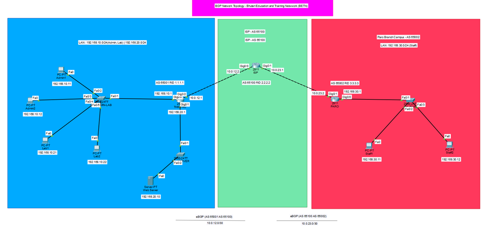

BGP Network for BETN
A model of the Bhutan Education and Training Network. The THIMPHU router (AS 65001), the ISP router (AS 65100) and the PARO router (AS 65002) exchange routes with eBGP, and ACLs control which traffic is allowed.
- Packet Tracer
- eBGP
- ACL
🔍 Click the diagram to enlarge it.

Report and viva completed for the networking course.